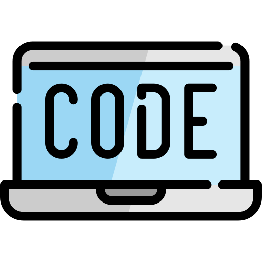

Le Pendu
 Ruby, Sinatra, Javascript, JQuery, AJAX, RSpec, HTML, CSS, FLStudio (music production), Photoshop
Le Pendu is a hangman game built on top of Sinatra for Ruby. The name is French for "Hanged Man", borrowed from the title of the picture used as the main background, drawn by Albert Besnard in 1873. I used elements of this picture for a slight plot twist on the original hangman. In this game, the player is a witch trying to remember a spell to prevent a criminal from escaping the hanging.
The project focuses on a full stack, from Sinatra to Javascript, rounding out with design work and music production. Capybara/RSpec was very useful for ironing out game logic. It is important that any sound must be expected by the player, so the game begins muted. The controls must persist across all pages and HTTP requests. Also, the music cannot be interrupted by the POST requests used by the guesses. Therefore, the game uses AJAX to send JSON strings to Sinatra to bypass the rendering.
The second problem, then, is limiting the features dependent on Javascript so that the game could be played even without it. Therefore, careful considerations were necessary to make sure the default HTML elements were functional even without Javascript. Using JQuery to handle keypress events, then sending them with AJAX is more aesthetically pleasing than typing in a textbox and submitting a form. Of course, players on a mobile phone cannot type without a focus for the onscreen keyboard, so the textbox needs to be visible and in the right place when the screen gets too small.
Finally, the music of the game was produced using FLStudio and looped using Audacity. Please note that the plot of the game is somewhat thematically dark, although there are no explicit imagery. It is hosted on a free Heroku dyno for now, but I might move it to an AWS EC2 micro if it's too slow.

 Resume
Resume j.a.chang820@gmail.com
j.a.chang820@gmail.com